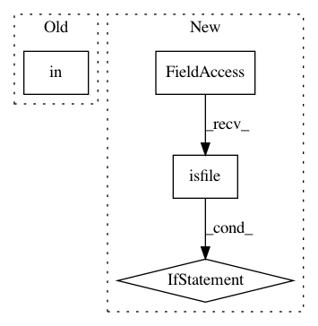

a89d7dd73bf376f74264512e2a22d8b55b103853,kur/loggers/binary_logger.py,BinaryLogger,enumerate_statistics,#BinaryLogger#,201
Before Change
if len(parts) != 3:
continue
if parts[-1] in ("batch", "time"):
continue
if "." in parts[1]:
After Change
legacy.legacy = False
stat = self.get_statistic_from_filename(filename,
was_legacy=legacy)
if legacy.legacy and os.path.isfile(os.path.join(
path,
self.get_filename_from_statistic(stat)
)):
// If this is a legacy filename, but a "modern" filename
// exists, then just enumerate the modern one and skip this.
continue
except KeyError:
continue
result.append(stat)
In pattern: SUPERPATTERN
Frequency: 3
Non-data size: 4
Instances
Project Name: deepgram/kur
Commit Name: a89d7dd73bf376f74264512e2a22d8b55b103853
Time: 2017-04-10
Author: ajsyp@syptech.net
File Name: kur/loggers/binary_logger.py
Class Name: BinaryLogger
Method Name: enumerate_statistics
Project Name: vatlab/SoS
Commit Name: f336f31c56fd8cfe0847240786abe6f6607dcd25
Time: 2017-02-26
Author: ben.bog@gmail.com
File Name: sos/__main__.py
Class Name:
Method Name: cmd_execute
Project Name: streamlit/streamlit
Commit Name: 16d976dc82dfebb56716084f273da236ee92a2d3
Time: 2019-05-31
Author: thiagot@gmail.com
File Name: lib/streamlit/watcher/LocalSourcesWatcher.py
Class Name: LocalSourcesWatcher
Method Name: update_watched_modules